9903.202-10 Illustration of Disclosure Statement Form, CASB DS-2.
The data which are required to be disclosed by educational institutions are set forth in detail in the Disclosure Statement Form, CASB DS-2, which is illustrated below:
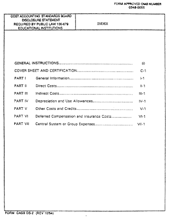
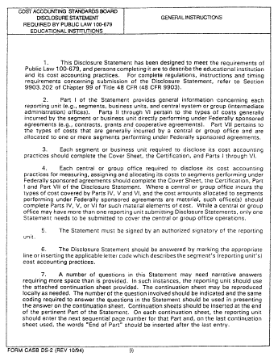
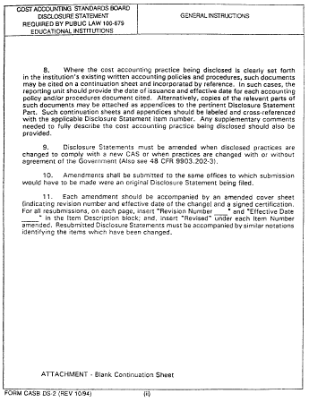
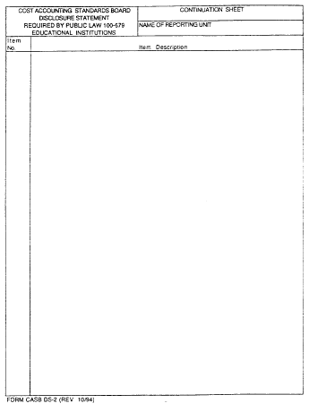
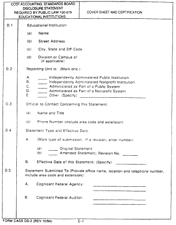
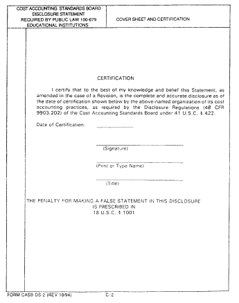
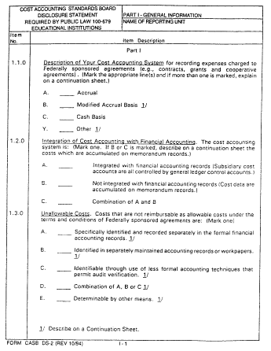
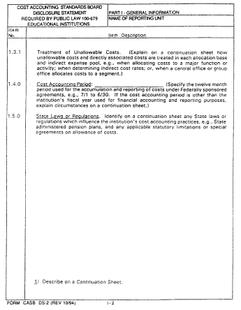
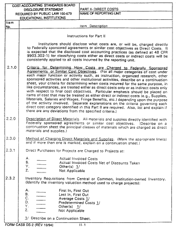
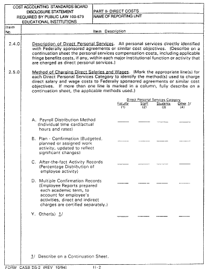
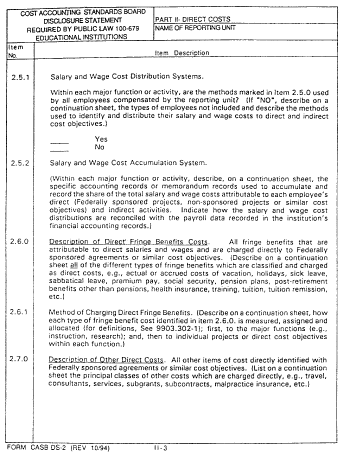
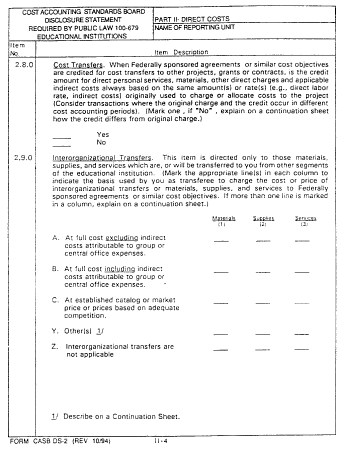
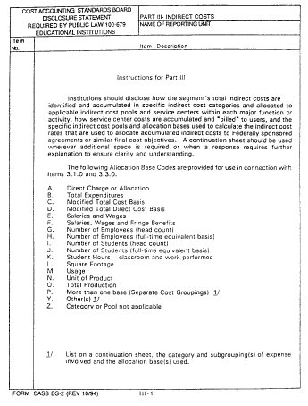
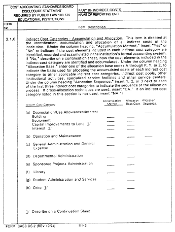
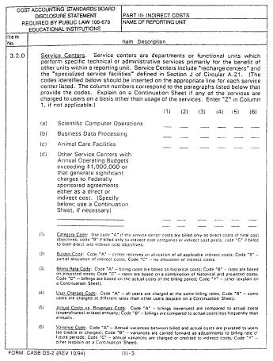
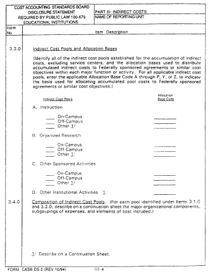
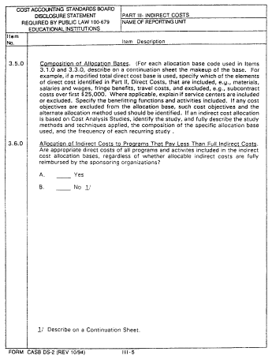
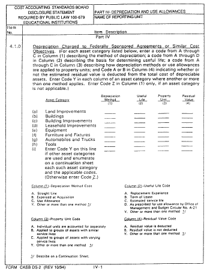
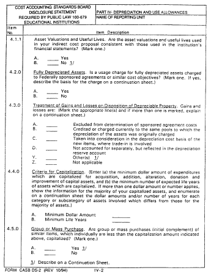
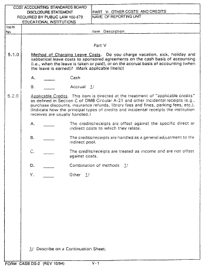
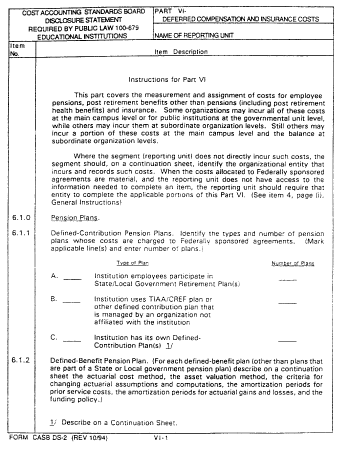
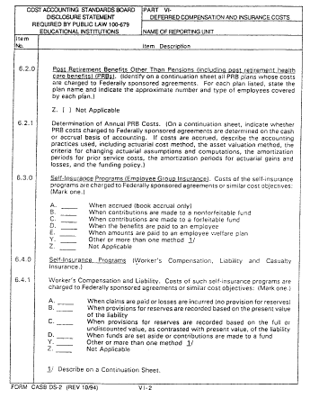
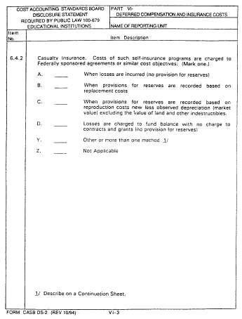
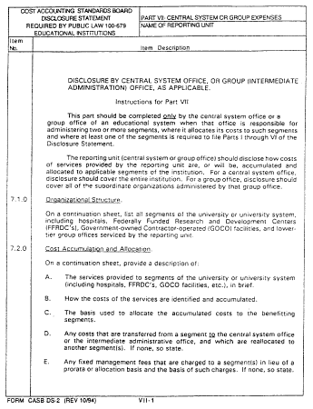
[59 FR 55757, Nov. 8, 1994]